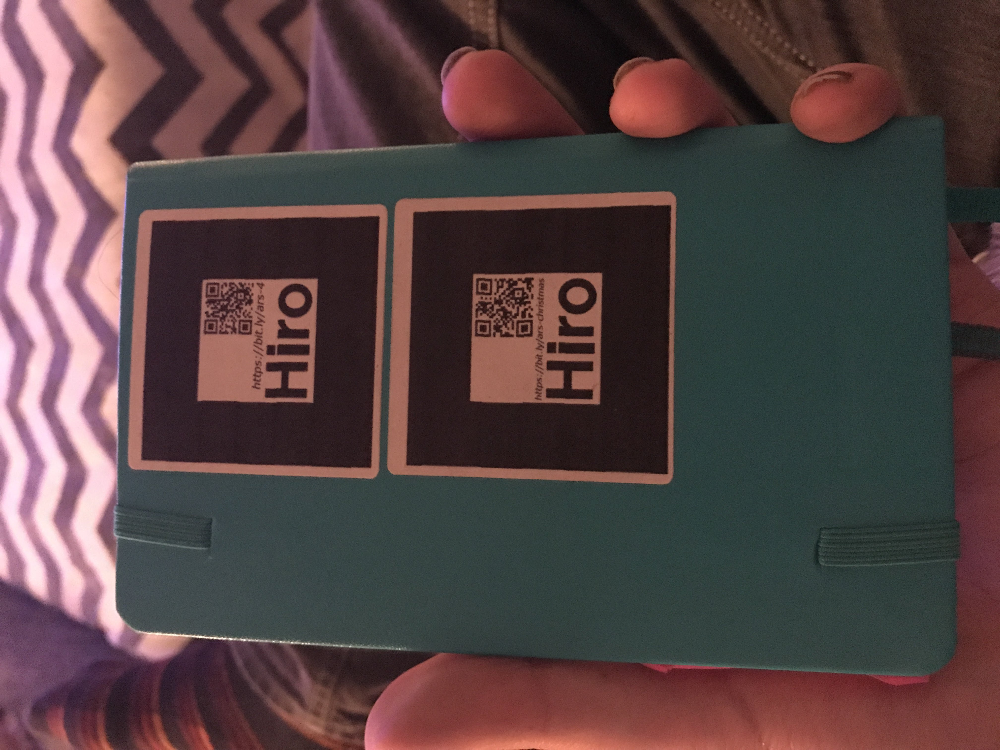

#ARctober | AR.js
#ARctober: Day 1
#ARctober: Day 5
#ARctober: Day 6
Spectre Bug

Lines

Cylinders + Drawing!

AR Marker notebook!

Color marker based: Spectacle
Tracking.js + P5.js
WebARonARKit + Three.ar.js (markerless!)
Running FBX model
3D Doodling
AR Cube Physics
Christmas Tree
Rainbow shader box
Spatially Dependent Shaders
AR Knot !
Knot formulas from this website, inspired by this Coding Train video!
Ocean Demo
Open Frameworks + ARKit => ofxARKit!
Simple Example
Beginner face tracking example
Spheres populating a room
Spheres + line visualization
An AR collaboration with Sage Jenson